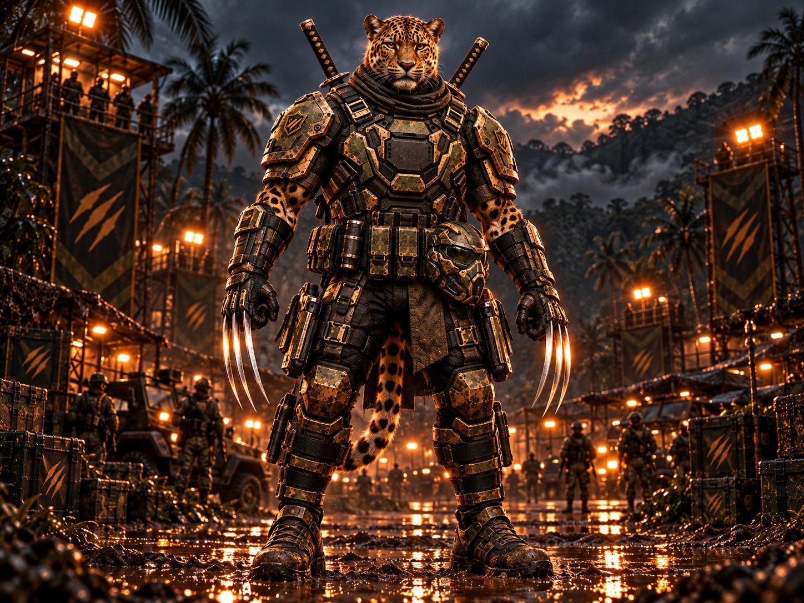
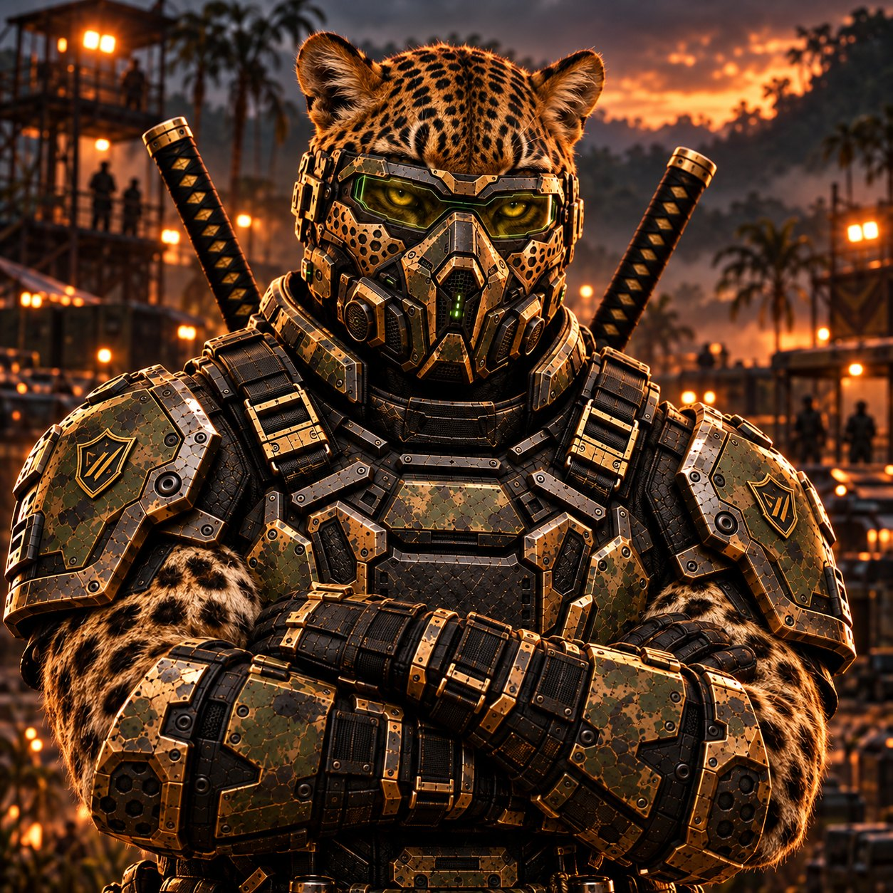
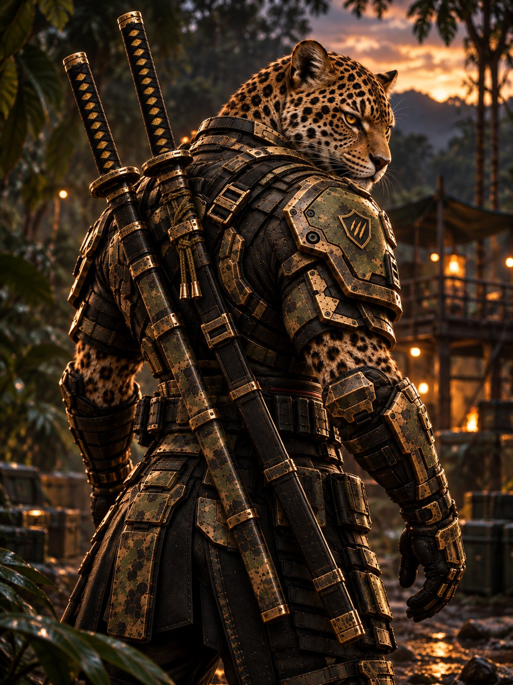

Origem do nome
Do tupi: jaguara, onça, e etê, verdadeiro. Jaguaretê quer dizer "a onça verdadeira", o nome indígena da onça-pintada, o maior felino das Américas.

Agilidade · Coragem · Floresta
Guardião da Floresta Amazônica
Os ribeirinhos contam a lenda do Yaguareté-Abá, o homem que vira onça. Mas, nos arquivos secretos do Exército Brasileiro, seu nome é outro.

Sobre o herói

Do tupi: jaguara, onça, e etê, verdadeiro. Jaguaretê quer dizer "a onça verdadeira", o nome indígena da onça-pintada, o maior felino das Américas.
Nas comunidades ribeirinhas, quem vê seus olhos brilhando entre as árvores jura que encontrou o Yaguareté-Abá, o homem que vira onça para proteger a mata.
Disciplinado, leal e corajoso. Sempre busca fazer o que é certo e salvar o máximo de pessoas, sem olhar a quem.
Marcos Hedmar nasceu em uma família simples. Estudioso e dedicado, conquistou uma bolsa de estudos em uma escola com aulas de karatê, onde se destacou entre todos os alunos. Depois de muito esforço, entrou para o Exército Brasileiro como soldado. Corajoso, sempre arriscou a vida para salvar os outros, e por isso levou muita bronca de sargentos e coronéis.
O Exército recebe uma denúncia: cientistas e soldados estadunidenses esconderam um laboratório no meio da floresta para fazer experimentos com as onças-pintadas (o maior felino das Américas). O objetivo é criar supersoldados-animais e tornar os Estados Unidos o país mais forte do mundo. A primeira patrulha enviada nunca voltou. Marcos é escolhido para fazer parte da segunda.
Infiltrado no laboratório, Marcos encontra dezenas de onças presas em cápsulas com líquido, inconscientes,cheias de cabos ligados ao corpo, cercadas de amostras de garras, dentes e sangue. Helicópteros estrangeiros resgatam os cientistas e bombardeiam o próprio laboratório. No desabamento, Marcos cai em um tanque de mutação e sai de lá como um homem-onça, com os instintos de uma fera e a mente de um soldado.
O Exército guarda o caso em segredo e o batiza de Jaguaretê. Promovido a sargento, ele hoje comanda o Esquadrão Sombra da Mata, caçando os laboratórios escondidos na floresta para libertar os animais e as pessoas capturadas.
Atributos & habilidades
Reflexos de felino somados a anos de karatê.
Rápido como a onça, um dos predadores mais velozes da mata.
Nunca recua quando alguém precisa ser salvo.
Destaque no karatê desde a escola.
Forte, mas o seu ponto alto é a velocidade.
Domina a terra e a água, mas não alcança o que está no alto. Helicópteros e drones são seus maiores inimigos.
Inventário
6/6 itens
Nenhum item com esses filtros.
Conquistas & objetivos
Nível up! Promovido a Tenente
Primeira base estrangeira na Amazônia destruída.
Assumiu o comando do Esquadrão Sombra da Mata, a unidade secreta do Exército.
Localizar e destruir todas as bases estrangeiras escondidas na Amazônia e no mundo.
Resgatar os animais capturados impedindo que virem arma de guerra.
Descobrir o que aconteceu com os soldados da primeira patrulha que nunca voltaram.
Impedir que os supersoldados-animais sejam criados.

Contato com o esquadrão
Em algumas línguas, um grupo de onças é chamado de sombra. Assim age o esquadrão do Jaguaretê: invisível na mata, até a hora do ataque.
Poucos são chamados. Menos ainda são aceitos. Só os leais, os fortes e os puros de coração entram para a sombra. Se você é um deles, envie seus dados.
Progresso salvo